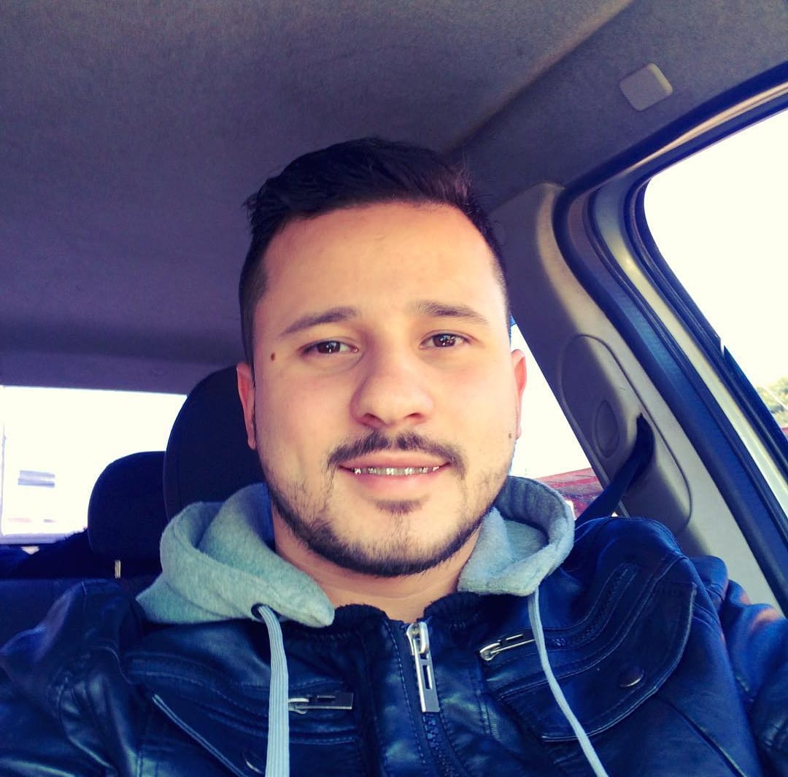

Aluno do Curso Full Stack Java
Meu nome é Vinícius Almeida de Quadros, sou estudante de Análise e Desenvolvimento de Sistemas na Faculdade Estácio de Sá desde 02/2022, e também do curso Full stack Java na EBAC onde venho buscando conhecimento constantemente para me inserir na área. Antes de optar pela Tecnologia, eu trabalhava na área de administração, atuei como líder nos últimos empregos e hoje tenho objetivos traçados para a área de Tecnologia como terminar o tecnólogo, fazer uma Pós-Graduação e um Mestrado.